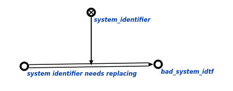
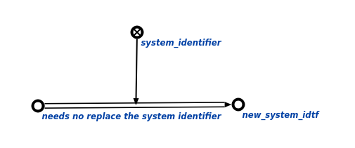

Задачей Команда замены системного идентификатора предназначена для удаления старого системного идентификатора и установка нового, выбранного пользователем. Первым аргументом команды является узел, в котором требуется заменить системный идентификатор. Вторым аргументом команды является файл на который требуется заменить текущий узел. Результатом выполнения команды является исправленный системный идентификатор данного узла. Пример замены системного идентификатора показан ниже (слева - исходный граф для замены системного идеттификатора, справа - исправленный в соответствии с нужным системным идентификатором):

